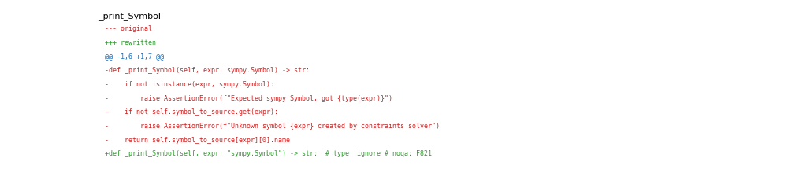
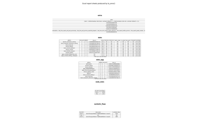
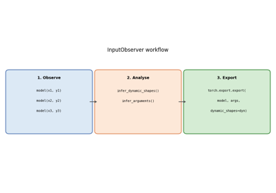
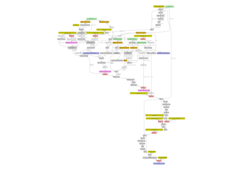

Note
Go to the end to download the full example code.
Applying patches to a model and displaying the diff#
Before exporting a PyTorch model with torch.export.export(), a set of
patches must be applied to work around limitations in the PyTorch exporter.
This example shows how to:
Apply those patches with
apply_patches_for_model.Inspect the registered
PatchDetailsobject that is yielded by the context manager.Display a unified diff for each
PatchInfoso you can see exactly what changed in the original PyTorch internals.Render the diff text as a matplotlib figure so that sphinx-gallery captures the example.
Show which patches were actually exercised when exporting a real model (arnir0/Tiny-LLM).
The context manager both applies the patches on entry and removes them
on exit, so the original functions are restored once the with block ends.
import torch
from yobx import doc
from yobx.helpers.patch_helper import PatchDetails
from yobx.torch import apply_patches_for_model, register_flattening_functions, use_dyn_not_str
from yobx.torch.tiny_models import get_tiny_model
1. Apply patches and inspect PatchDetails#
apply_patches_for_model() accepts two boolean flags:
patch_torch=True— patches several internal PyTorch functions that prevent successful dynamic-shape export.patch_transformers=True— adds extra patches for 🤗 Transformers models.
The context manager yields a PatchDetails instance that lists every
PatchInfo that was applied.
with apply_patches_for_model(patch_torch=True) as details:
assert isinstance(details, PatchDetails)
print(f"Number of patches applied: {details.n_patches}")
for patch in details:
print(f" [{patch.family}] {patch.name}")
Number of patches applied: 5
[torch] _print_Symbol
[torch] patched_infer_size
[torch] patched__broadcast_shapes
[torch] patched__get_range_constraints
[torch] patched__maybe_broadcast
2. Display the diff for each patch#
After the with block the patches have been removed, but
PatchInfo.format_diff() still works because the original function
reference is retained internally.
Each diff is a standard unified diff — lines starting with - were
in the original function; lines starting with + are in the patched
version.
for patch in details:
print(patch.format_diff(format="raw"))
print()
torch: DynamicDimConstraintPrinter._print_Symbol -> patched_DynamicDimConstraintPrinter._print_Symbol
--- original
+++ rewritten
@@ -1,6 +1,7 @@
-def _print_Symbol(self, expr: sympy.Symbol) -> str:
- if not isinstance(expr, sympy.Symbol):
- raise AssertionError(f"Expected sympy.Symbol, got {type(expr)}")
- if not self.symbol_to_source.get(expr):
- raise AssertionError(f"Unknown symbol {expr} created by constraints solver")
- return self.symbol_to_source[expr][0].name
+def _print_Symbol(self, expr: "sympy.Symbol") -> str: # type: ignore # noqa: F821
+ import sympy
+
+ assert isinstance(expr, sympy.Symbol), str(type(expr))
+ if self.symbol_to_source.get(expr): # type: ignore
+ return self.symbol_to_source[expr][0].name # type: ignore
+ return str(expr)
torch: infer_size -> patched_infer_size
--- original
+++ rewritten
@@ -1,10 +1,15 @@
-def infer_size(a: Sequence[IntLikeType], b: Sequence[IntLikeType]) -> tuple[IntLikeType, ...]:
- from torch.fx.experimental.symbolic_shapes import guard_or_false
+def patched_infer_size(a, b):
+ """
+ Patches ``torch._subclasses.fake_impls.infer_size``.
+ This patch is needed to export
+ :class:`yobx.torch.tiny_models.TinyBroadcastAddModel`.
+ """
+ import torch.fx.experimental.symbolic_shapes as _sym_shapes
dimsA = len(a)
dimsB = len(b)
ndim = max(dimsA, dimsB)
- expandedSizes: list[IntLikeType] = [0] * ndim
+ expandedSizes = [0] * ndim
for i in range(ndim - 1, -1, -1):
offset = ndim - 1 - i
dimA = dimsA - 1 - offset
@@ -23,11 +28,21 @@
# expression of an or statement as-is, without bool()'ing it; if this
# were not the case, we'd need to write this using torch.sym_or() or
# something like that).
- torch._check(
- guard_or_false(sizeA == 1) or guard_or_false(sizeB == 1) or sizeA == sizeB,
- lambda: f"The size of tensor a ({sizeA}) "
- f"must match the size of tensor b ({sizeB}) "
- f"at non-singleton dimension {i})",
- )
- expandedSizes[i] = sizeB if guard_or_false(sizeA == 1) else sizeA
+ try:
+ b1 = _sym_shapes.guard_or_false(sizeA == 1)
+ except _sym_shapes.GuardOnDataDependentSymNode:
+ b1 = False
+ try:
+ b2 = _sym_shapes.guard_or_false(sizeB == 1)
+ except _sym_shapes.GuardOnDataDependentSymNode:
+ b2 = False
+ try:
+ b3 = _sym_shapes.guard_or_false(sizeA == sizeB)
+ except _sym_shapes.GuardOnDataDependentSymNode:
+ b3 = False
+ if b1 or b2 or b3:
+ expandedSizes[i] = sizeB if _sym_shapes.guard_or_false(sizeA == 1) else sizeA
+ else:
+ # PATCHED: generic case, the dimension is known, no need to assert
+ expandedSizes[i] = torch.sym_max(sizeA, sizeB) # type: ignore
return tuple(expandedSizes)
torch: _broadcast_shapes -> patched__broadcast_shapes
--- original
+++ rewritten
@@ -1,12 +1,12 @@
-def _broadcast_shapes(*_shapes):
- from torch.fx.experimental.symbolic_shapes import (
- guard_or_false,
- guarding_hint_or_throw,
- has_guarding_hint,
- is_nested_int,
- )
+def patched__broadcast_shapes(*_shapes):
+ """
+ Patches ``torch._refs._broadcast_shapes``.
+ This patch is needed to export
+ :class:`yobx.torch.tiny_models.TinyBroadcastAddModel`.
+ """
+ import torch.fx.experimental.symbolic_shapes as _sym_shapes
- backed_so = torch.fx.experimental._config.backed_size_oblivious
+ from torch._prims_common import IntLike
shapes = tuple(
(x,) if isinstance(x, IntLike) else x for x in filter(lambda x: x is not None, _shapes)
@@ -19,62 +19,36 @@
for shape in shapes:
if not isinstance(shape, Sequence):
raise RuntimeError(
- f"Input shapes should be of type ints, a tuple of ints, or a list of ints, got {shape}"
+ "Input shapes should be of type ints, a tuple of ints, "
+ "or a list of ints, got ",
+ shape,
)
# Computes common shape
- common_shape: list[int | torch.SymInt] = [
- 1,
- ] * reduce(max, (len(shape) for shape in shapes))
- for arg_idx, shape in enumerate(shapes):
+ common_shape = [1] * reduce(max, (len(shape) for shape in shapes))
+ for _arg_idx, shape in enumerate(shapes):
for idx in range(-1, -1 - len(shape), -1):
- # NB: handle nested ints specially to avoid invalid guarding on Ne(j0, 1).
- if is_nested_int(shape[idx]):
+ if _sym_shapes.is_nested_int(shape[idx]):
# Broadcasting is allowed for (j0, 1) or (j0, j0);
# not (j0, j1), (j0, 5), etc.
- if is_nested_int(common_shape[idx]) and guard_or_false(
+ if _sym_shapes.is_nested_int(common_shape[idx]) and _sym_shapes.guard_or_false(
shape[idx] == common_shape[idx]
):
continue
else:
- # When backed size oblivious is used, we specialize for broadcasting
- # if its the only way to compile the example input.
- # i.e: s0:1, s1:1 ==>
- # assert s0==s1, no specialization on ==1 or !=1.
- # The non-broadcast path is picked
- # s0:1, s1:4 ==>
- # specialize(s0) to be 1.
- # s0:4, s1:1 ==>
- # specialize(s1) to be 1.
- if (
- backed_so
- and has_guarding_hint(shape[idx])
- and has_guarding_hint(common_shape[idx])
- ):
- a = guarding_hint_or_throw(shape[idx])
- b = guarding_hint_or_throw(common_shape[idx])
- if a == 1 and b != 1:
- torch._check(shape[idx] == 1)
- if b == 1 and a != 1:
- torch._check(common_shape[idx] == 1)
- if guard_or_false(shape[idx] == common_shape[idx]):
+ if _sym_shapes.guard_or_false(shape[idx] == common_shape[idx]):
continue
-
- if guard_or_false(common_shape[idx] == 1):
+ # PATCHED: two cases, if == for sure, no broadcast,
+ # otherwise maybe broadcast with max(dimensions)
+ if _sym_shapes.guard_or_false(common_shape[idx] != 1):
+ pass
+ elif _sym_shapes.guard_or_false(common_shape[idx] == 1) or _sym_shapes.guard_or_false(
+ shape[idx] != 1
+ ):
if shape[idx] < 0:
raise ValueError("Attempting to broadcast a dimension with negative length!")
- common_shape[idx] = shape[idx]
-
- if not is_nested_int(shape[idx]) and guard_or_false(shape[idx] == 1):
- # broadcast case .
- continue
+ common_shape[idx] = shape[idx] # type: ignore
else:
- # If broadcasting is undecided we pick non-broadcast path and add runtime assertion.
- torch._check(
- common_shape[idx] == shape[idx],
- lambda: f"Attempting to broadcast a dimension of length {shape[idx]} at {idx}! "
- f"Mismatching argument at index {arg_idx} had {shape}; but expected shape "
- f"should be broadcastable to {common_shape}",
- )
+ common_shape[idx] = torch.sym_max(common_shape[idx], shape[idx]) # type: ignore
return common_shape
torch: _get_range_constraints -> patched__get_range_constraints
--- original
+++ rewritten
@@ -1,42 +1,36 @@
-def _get_range_constraints(
+def patched__get_range_constraints(
mod: torch.nn.Module,
- export_artifact: ExportArtifact,
+ export_artifact: "torch.export._trace.ExportArtifact", # noqa: F821
args,
kwargs,
dynamic_shapes,
):
+ """
+ Patches ``torch.export._trace._get_range_constraints``.
+ See PR `#174593 <https://github.com/pytorch/pytorch/pull/174593>`_.
+ """
gm: torch.fx.GraphModule = export_artifact.aten.gm
- export_graph_signature: ExportGraphSignature = export_artifact.aten.sig
- fake_mode: FakeTensorMode = export_artifact.fake_mode
+ export_graph_signature: torch.export.graph_signature.ExportGraphSignature = (
+ export_artifact.aten.sig
+ )
+ fake_mode: "FakeTensorMode" = export_artifact.fake_mode # type: ignore # noqa: F821
num_lifted = next(
(
i
for i, s in enumerate(export_graph_signature.input_specs)
- if s.kind == InputKind.USER_INPUT
+ if s.kind == torch.export.graph_signature.InputKind.USER_INPUT
),
len(export_graph_signature.input_specs),
)
- combined_args = _combine_args(mod, args, kwargs)
- # This is because we trace based on the kwargs passed in from user
+ # preserve_order=True:
+ # this is because we trace based on the kwargs passed in from user
# not based on the signature. I feel it would be better to just enforce
# one ordering at the start of tracing to avoid confusions, but that is
# bigger refactor, so do this to unblock for now.
- combined_args_traced_order = {}
- for arg in combined_args:
- if arg not in kwargs:
- combined_args_traced_order[arg] = combined_args[arg]
+ combined_args = _combine_args(mod, args, kwargs, preserve_order=True)
- for key in kwargs:
- combined_args_traced_order[key] = kwargs[key]
-
- combined_args = combined_args_traced_order
-
- range_constraints = make_constraints(
- fake_mode,
- gm,
- combined_args,
- dynamic_shapes,
- num_lifted,
+ range_constraints = torch._export.non_strict_utils.make_constraints(
+ fake_mode, gm, combined_args, dynamic_shapes, num_lifted
)
return range_constraints
torch: _maybe_broadcast -> patched__maybe_broadcast
--- original
+++ rewritten
@@ -1,15 +1,18 @@
-def _maybe_broadcast(*args, preserve_cpu_scalar_tensors=True):
+def patched__maybe_broadcast(*args, preserve_cpu_scalar_tensors=True):
+ """
+ Patches ``torch._refs._maybe_broadcast``.
+ This patch is needed to export
+ :class:`yobx.torch.tiny_models.TinyBroadcastAddModel`.
+ """
+ from torch._prims_common import ShapeType, TensorLike, Number
+
# Computes common shape
- common_shape = _broadcast_shapes(
+ common_shape = patched__broadcast_shapes(
*(t.shape if isinstance(t, TensorLike) else None for t in args)
)
def should_expand(a: ShapeType, b: ShapeType) -> bool:
- from torch.fx.experimental.symbolic_shapes import (
- guard_or_false,
- sym_and,
- sym_or,
- )
+ from torch.fx.experimental.symbolic_shapes import guard_or_false, sym_and, sym_or
if len(a) != len(b):
return True
@@ -29,10 +32,15 @@
return True
# u0==u1 assume the same, no broadcasting!
- torch._check(
- x == y,
- lambda: "sizes assumed to be the same due to unbacked broadcasting semantics",
- )
+ # PATCHED: avoid errors
+ return True # guard_or_true(x != y)
+ # torch._check(
+ # x == y,
+ # lambda x=x, y=y: (
+ # f"sizes assumed to be the same due to unbacked "
+ # f"broadcasting semantics x={x!r}, y={y!r}"
+ # ),
+ # )
return False
@@ -42,14 +50,14 @@
elif isinstance(x, Number):
return x
elif isinstance(x, TensorLike):
- if preserve_cpu_scalar_tensors and utils.is_cpu_scalar_tensor(x):
+ if preserve_cpu_scalar_tensors and torch._prims_common.is_cpu_scalar_tensor(x): # type: ignore
return x
- if should_expand(x.shape, common_shape):
- return x.expand(common_shape)
+ if should_expand(x.shape, common_shape): # type: ignore
+ return x.expand(common_shape) # type: ignore
return x
else:
- raise RuntimeError("Unexpected type when broadcasting: " + str(type(x)) + "!")
+ raise RuntimeError(f"Unexpected type when broadcasting: {str(type(x))}!")
return tuple(__maybe_broadcast(x, common_shape) for x in args)
3. Plot the diff text as an image#
The first 10 lines of the shortest diff are rendered as a matplotlib figure
with colour-coded lines: - lines in red, + lines in green, and
@@ hunk headers in blue.
This makes the figure capturable by sphinx-gallery.
yobx.doc.plot_text() automates this rendering.
import matplotlib.pyplot as plt # noqa: E402
_DIFF_COLORS = {"+": "#2a9d2a", "-": "#cc2222", "@": "#1a6fbf"}
smallest = min(details, key=lambda p: len(p.make_diff().splitlines()))
diff_preview = "\n".join(smallest.make_diff().splitlines()[:10])
doc.plot_text(diff_preview, title=smallest.name, line_color_map=_DIFF_COLORS)
plt.show()

4. Show which patches apply when exporting arnir0/Tiny-LLM#
When exporting a real transformers model we can find out exactly which
patched functions were exercised by calling
PatchDetails.patches_involved_in_graph() after
torch.export.export().
register_flattening_functions() must also be active so that the
DynamicCache pytree structure is understood by the
exporter.
data = get_tiny_model("arnir0/Tiny-LLM")
model, inputs, ds = data.model, data.export_inputs, data.dynamic_shapes
with (
register_flattening_functions(patch_transformers=True),
apply_patches_for_model(patch_torch=True, patch_transformers=True, model=model) as details2,
):
ep = torch.export.export(model, (), kwargs=inputs, dynamic_shapes=use_dyn_not_str(ds))
patches = details2.patches_involved_in_graph(ep.graph)
print(f"\nPatches involved in the exported graph: {len(patches)}")
print(details2.make_report(patches))
Patches involved in the exported graph: 1
transformers: LlamaRotaryEmbedding.forward -> common_RotaryEmbedding.forward
--- original
+++ rewritten
@@ -1,18 +1,26 @@
-@torch.no_grad()
-@dynamic_rope_update # power user: used with advanced RoPE types (e.g. dynamic rope)
-def forward(self, x, position_ids):
+@patched_dynamic_rope_update
+def forward(self, x, position_ids, layer_type=None):
+ if layer_type is not None:
+ # transformers>=5.0
+ inv_freq = getattr(self, f"{layer_type}_inv_freq")
+ attention_scaling = getattr(self, f"{layer_type}_attention_scaling")
+ else:
+ # transformers<5.0
+ inv_freq = self.inv_freq
+ attention_scaling = self.attention_scaling
+
inv_freq_expanded = (
- self.inv_freq[None, :, None].float().expand(position_ids.shape[0], -1, 1).to(x.device)
+ inv_freq[None, :, None].float().expand(position_ids.shape[0], -1, 1).to(x.device)
)
position_ids_expanded = position_ids[:, None, :].float()
device_type = (
x.device.type if isinstance(x.device.type, str) and x.device.type != "mps" else "cpu"
)
- with maybe_autocast(device_type=device_type, enabled=False): # Force float32
+ with torch.autocast(device_type=device_type, enabled=False): # Force float32
freqs = (inv_freq_expanded.float() @ position_ids_expanded.float()).transpose(1, 2)
emb = torch.cat((freqs, freqs), dim=-1)
- cos = emb.cos() * self.attention_scaling
- sin = emb.sin() * self.attention_scaling
+ cos = emb.cos() * attention_scaling
+ sin = emb.sin() * attention_scaling
return cos.to(dtype=x.dtype), sin.to(dtype=x.dtype)
--- original
+++ rewritten
@@ -1,103 +1,193 @@
-def dynamic_rope_update(rope_forward):
- """
- Decorator function to update the RoPE parameters in the forward pass, if the model is using a dynamic RoPE
- (i.e. a RoPE implementation that may recompute its frequencies in the forward pass).
+def patched_dynamic_rope_update(rope_forward):
+ """manual patch: ``[patch:transformers.modeling_rope_utils.dynamic_rope_update]``
- Args:
- rope_forward (Callable):
- The forward pass of the RoPE implementation.
+ ``rope_type`` is determined in the constructor of class
+ :class:`transformers.models.phi3.modeling_phi3.Phi3RotaryEmbedding`.
- Returns:
- The decorated forward pass.
+ .. code-block:: python
+
+ if hasattr(config, "rope_scaling") and config.rope_scaling is not None:
+ self.rope_type = config.rope_scaling.get(
+ "rope_type", config.rope_scaling.get("type"))
+ else:
+ self.rope_type = "default"
+
+ The original code of the patched function:
+
+ .. code-block:: python
+
+ def dynamic_rope_update(rope_forward):
+ def longrope_frequency_update(self, position_ids, device):
+ seq_len = torch.max(position_ids) + 1
+ if hasattr(self.config, "original_max_position_embeddings"):
+ original_max_position_embeddings =
+ self.config.original_max_position_embeddings
+ else:
+ original_max_position_embeddings =
+ self.config.max_position_embeddings
+ if seq_len > original_max_position_embeddings:
+ if not hasattr(self, "long_inv_freq"):
+ self.long_inv_freq, _ = self.rope_init_fn(
+ self.config, device, seq_len=original_max_position_embeddings + 1
+ )
+ self.register_buffer("inv_freq", self.long_inv_freq, persistent=False)
+ else:
+ self.original_inv_freq = self.original_inv_freq.to(device)
+ self.register_buffer("inv_freq", self.original_inv_freq, persistent=False)
+
+ def dynamic_frequency_update(self, position_ids, device):
+ seq_len = torch.max(position_ids) + 1
+ if seq_len > self.max_seq_len_cached: # growth
+ inv_freq, self.attention_scaling = self.rope_init_fn(
+ self.config, device, seq_len=seq_len)
+ self.register_buffer("inv_freq", inv_freq, persistent=False)
+ self.max_seq_len_cached = seq_len
+
+ if seq_len < self.original_max_seq_len and
+ self.max_seq_len_cached > self.original_max_seq_len:
+ self.original_inv_freq = self.original_inv_freq.to(device)
+ self.register_buffer("inv_freq", self.original_inv_freq, persistent=False)
+ self.max_seq_len_cached = self.original_max_seq_len
+
+ @wraps(rope_forward)
+ def wrapper(self, x, position_ids):
+ if "dynamic" in self.rope_type:
+ dynamic_frequency_update(self, position_ids, device=x.device)
+ elif self.rope_type == "longrope":
+ longrope_frequency_update(self, position_ids, device=x.device)
+ return rope_forward(self, x, position_ids)
+
+ return wrapper
+
"""
def longrope_frequency_update(self, position_ids, device, layer_type=None):
- """Longrope uses long factor if sequence is larger than original pretraining length, short otherwise."""
+ # It is no use to patch the function after the model is created
+ # as rope_init_fn is an attribute set to one function when the model
+ # is created and when no patch is applied yet.
+ # So we select the patched version here.
+ rope_init_fn = _get_rope_init_fn(self, layer_type=layer_type)
seq_len = torch.max(position_ids) + 1
+ if hasattr(self.config, "original_max_position_embeddings"):
+ original_max_position_embeddings = self.config.original_max_position_embeddings
+ else:
+ original_max_position_embeddings = self.config.max_position_embeddings
if layer_type is None:
- rope_type = self.rope_type
- original_inv_freq = self.original_inv_freq
- prefix = ""
- original_max_position_embeddings = self.config.rope_parameters[
- "original_max_position_embeddings"
- ]
- else:
- rope_type = self.rope_type[layer_type]
- original_inv_freq = getattr(self, f"{layer_type}_original_inv_freq")
- prefix = f"{layer_type}_"
- original_max_position_embeddings = self.config.rope_parameters[layer_type][
- "original_max_position_embeddings"
- ]
-
- if seq_len > original_max_position_embeddings:
- if not hasattr(self, f"{layer_type}_long_inv_freq"):
- rope_init_fn = ROPE_INIT_FUNCTIONS[rope_type]
- long_inv_freq, _ = rope_init_fn(
- self.config,
- device,
- seq_len=original_max_position_embeddings + 1,
- layer_type=layer_type,
- )
- self.register_buffer(f"{prefix}inv_freq", long_inv_freq, persistent=False)
- setattr(self, f"{prefix}long_inv_freq", long_inv_freq)
- else:
- # This .to() is needed if the model has been moved to a device after being initialized (because
- # the buffer is automatically moved, but not the original copy)
- original_inv_freq = original_inv_freq.to(device)
- self.register_buffer(f"{prefix}inv_freq", original_inv_freq, persistent=False)
- setattr(self, f"{prefix}original_inv_freq", original_inv_freq)
-
- def dynamic_frequency_update(self, position_ids, device, layer_type=None):
- """
- dynamic RoPE layers should recompute `inv_freq` in the following situations:
- 1 - growing beyond the cached sequence length (allow scaling)
- 2 - the current sequence length is in the original scale (avoid losing precision with small sequences)
- """
- seq_len = torch.max(position_ids) + 1
- if layer_type is None:
- rope_type = self.rope_type
- max_seq_len_cached = self.max_seq_len_cached
+ # rope_type = self.rope_type
original_inv_freq = self.original_inv_freq
prefix = ""
else:
- rope_type = self.rope_type[layer_type]
- max_seq_len_cached = getattr(
- self, f"{layer_type}_max_seq_len_cached", self.max_seq_len_cached
- )
+ # rope_type = self.rope_type[layer_type]
original_inv_freq = getattr(self, f"{layer_type}_original_inv_freq")
prefix = f"{layer_type}_"
- if seq_len > max_seq_len_cached: # growth
- rope_init_fn = ROPE_INIT_FUNCTIONS[rope_type]
- inv_freq, self.attention_scaling = rope_init_fn(
- self.config,
- device,
- seq_len=seq_len,
- layer_type=layer_type,
- )
- # TODO joao: may break with compilation
- self.register_buffer(f"{prefix}inv_freq", inv_freq, persistent=False)
- setattr(self, f"{layer_type}_max_seq_len_cached", seq_len)
+ # At export time, seq_len is unknown.
+ long_inv_freq, _ = rope_init_fn(
+ self.config, device, seq_len=original_max_position_embeddings + 1
+ )
+ original_inv_freq = self.original_inv_freq.to(device)
- if (
- seq_len < self.original_max_seq_len and max_seq_len_cached > self.original_max_seq_len
- ): # reset
- # This .to() is needed if the model has been moved to a device after being initialized (because
- # the buffer is automatically moved, but not the original copy)
- original_inv_freq = original_inv_freq.to(device)
- self.register_buffer(f"{prefix}inv_freq", original_inv_freq, persistent=False)
- setattr(self, f"{prefix}original_inv_freq", original_inv_freq)
- setattr(self, f"{layer_type}_max_seq_len_cached", self.original_max_seq_len)
+ # PATCHED: uses torch.cond instead of a test
+ cond = (seq_len > original_max_position_embeddings).item()
+ inv_freq = torch.cond(
+ cond,
+ (lambda x, y: x.clone()),
+ (lambda x, y: y.clone()),
+ [long_inv_freq.to(original_inv_freq.dtype), original_inv_freq],
+ )
+ setattr(self, f"{prefix}inv_freq", inv_freq)
+ # if seq_len > original_max_position_embeddings:
+ # self.inv_freq = self.long_inv_freq
+ # else:
+ # self.inv_freq = self.original_inv_freq
+
+ def dynamic_frequency_update(self, position_ids, device, layer_type=None):
+ # constructor:
+ # - self.max_seq_len_cached = config.max_position_embeddings
+ # - self.original_max_seq_len = config.max_position_embeddings
+ # - inv_freq, self.attention_scaling = self.rope_init_fn(self.config, device)
+
+ # It is no use to patch the function after the model is created
+ # as rope_init_fn is an attribute set to one function when the model
+ # is created and when no patch is applied yet.
+ # So we select the patched version here.
+ rope_init_fn = _get_rope_init_fn(self, layer_type=layer_type)
+
+ # This behaviour is difficult to translate.
+ # The sequence always grows.
+ # The test should always True.
+ # So: self.max_seq_len_cached = max(self.max_seq_len_cached, seq_len) --> seq_len
+ #
+ # if seq_len > self.max_seq_len_cached: # growth
+ # inv_freq, self.attention_scaling = self.rope_init_fn(
+ # self.config, device, seq_len=seq_len
+ # )
+ # self.register_buffer("inv_freq", inv_freq, persistent=False)
+ # self.max_seq_len_cached = seq_len
+ #
+ # So we should not need what follows.
+ #
+ # cond = (seq_len > self.max_seq_len_cached).item()
+ # self.attention_scaling = torch.cond(
+ # cond,
+ # (lambda x, y: x.clone()),
+ # (lambda x, y: y.clone()),
+ # [attention_scaling, self.attention_scaling],
+ # )
+
+ seq_len = torch.max(position_ids) + 1
+ long_inv_freq, self.attention_scaling = rope_init_fn(self.config, device, seq_len=seq_len)
+
+ if layer_type is None:
+ # rope_type = self.rope_type
+ # max_seq_len_cached = self.max_seq_len_cached
+ original_inv_freq = self.original_inv_freq
+ prefix = ""
+ else:
+ # rope_type = self.rope_type[layer_type]
+ # max_seq_len_cached = getattr(
+ # self, f"{layer_type}_max_seq_len_cached", self.max_seq_len_cached
+ # )
+ original_inv_freq = getattr(self, f"{layer_type}_original_inv_freq")
+ prefix = f"{layer_type}_"
+
+ # Second test to translate.
+ # Let's keep in mind, self.max_seq_len_cached = seq_len is likely to be True.
+ # But in that case the following condition is a way to restore the original cache.
+
+ # if (
+ # seq_len < self.original_max_seq_len
+ # and self.max_seq_len_cached > self.original_max_seq_len
+ # ):
+ # self.original_inv_freq = self.original_inv_freq.to(device)
+ # self.register_buffer("inv_freq", self.original_inv_freq, persistent=False)
+ # self.max_seq_len_cached = self.original_max_seq_len
+
+ original_inv_freq = self.original_inv_freq.to(device)
+ cond = (seq_len >= self.original_max_seq_len).item()
+ # PATCHED: uses torch.cond instead of a test
+ inv_freq = torch.cond(
+ cond,
+ (lambda x, y: x.clone()),
+ (lambda x, y: y.clone()),
+ [long_inv_freq.to(original_inv_freq.dtype), original_inv_freq],
+ )
+ setattr(self, f"{prefix}inv_freq", inv_freq)
@wraps(rope_forward)
def wrapper(self, x, position_ids, layer_type=None):
- rope_type = self.rope_type if layer_type is None else self.rope_type[layer_type]
- kwargs = {"layer_type": layer_type} if layer_type is not None else {}
- if "dynamic" in rope_type:
- dynamic_frequency_update(self, position_ids, device=x.device, **kwargs)
- elif rope_type == "longrope":
- longrope_frequency_update(self, position_ids, device=x.device, **kwargs)
- return rope_forward(self, x, position_ids, **kwargs)
+ if layer_type is None:
+ if "dynamic" in self.rope_type:
+ dynamic_frequency_update(self, position_ids, device=x.device)
+ elif self.rope_type == "longrope":
+ longrope_frequency_update(self, position_ids, device=x.device)
+ return rope_forward(self, x, position_ids)
+
+ if "dynamic" in self.rope_type:
+ dynamic_frequency_update(self, position_ids, device=x.device, layer_type=layer_type)
+ elif self.rope_type == "longrope":
+ longrope_frequency_update(self, position_ids, device=x.device, layer_type=layer_type)
+ return rope_forward(self, x, position_ids, layer_type=layer_type)
return wrapper
aten.unsqueeze.default(b_model_rotary_emb_inv_freq, 0) -> unsqueeze_12
aten.unsqueeze.default(unsqueeze_12, 2) -> unsqueeze_13
aten._assert_tensor_metadata.default(unsqueeze_13) -> _assert_tensor_metadata_default_3
aten.to.dtype(unsqueeze_13, torch.float32) -> to_3
aten.expand.default(to_3, [sym_size_int_18, -1, 1]) -> expand_1
aten._assert_tensor_metadata.default(expand_1) -> _assert_tensor_metadata_default_4
aten.to.dtype_layout(expand_1) -> to_4
aten.slice.Tensor(position_ids, 0, 0, 9223372036854775807) -> slice_4
aten.unsqueeze.default(slice_4, 1) -> unsqueeze_14
aten.slice.Tensor(unsqueeze_14, 2, 0, 9223372036854775807) -> slice_5
aten._assert_tensor_metadata.default(slice_5) -> _assert_tensor_metadata_default_5
aten.to.dtype(slice_5, torch.float32) -> to_5
<built-in function getitem>(wrap_with_autocast, 0) -> mul
<built-in function getitem>(wrap_with_autocast, 1) -> mul_1
aten._assert_tensor_metadata.default(mul) -> _assert_tensor_metadata_default_8
aten.to.dtype(mul, torch.float32) -> to_8
aten._assert_tensor_metadata.default(mul_1) -> _assert_tensor_metadata_default_9
aten.to.dtype(mul_1, torch.float32) -> to_9
Total running time of the script: (0 minutes 2.828 seconds)
Related examples

Excel report produced by the torch exporter

InputObserver: recording inputs for ONNX export

Export a LLM with InputObserver (with Tiny-LLM)